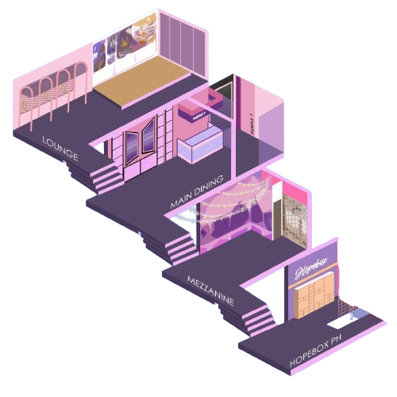

The 1st Ever BTS-themed Café
Housed in One Cedar Wood Place, Tomas Morato Avenue in Quezon City is the 1st ever of its kind in the country and acts as a safe space for BTS fans or famously known as ARMY. The café originally opened in Congressional Avenue, Quezon City in December 2020, and has relocated to a revamped four-floor ARMY haven in Tomas Morato Avenue in 2022. The café offers Korean-Filipino foods and pastries and a wide array of drinks. Apart from its dine-in and take-out services, Purple 7 Café is also a home for various private events upon reservation.